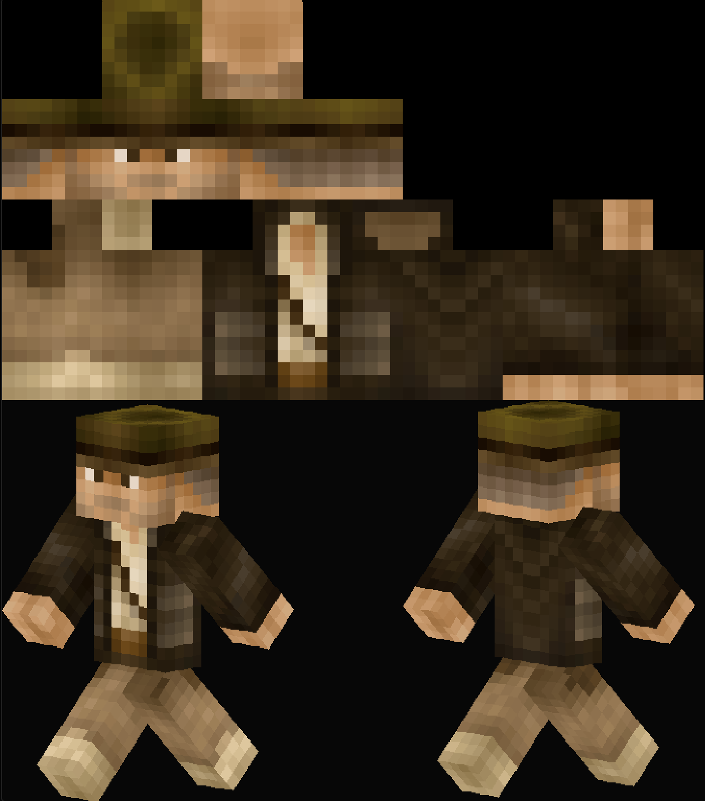

2D UV layout → 3D body
Can AI Turn a Picture into a Minecraft Character?
Generated examples
Direct reference-to-skin generation results
Try it yourself
Free online Minecraft skin generator
Use it online, or train and deploy the open-source model locally.
entropydrop.com
The hidden problem
A playable Minecraft character is a 3D body wearing a specific 2D UV layout
Minecraft reads fixed UV coordinates
Body regions: head, torso, arms, and legs each have a fixed
place.
Overlay regions: second-layer texture for hair, hats,
sleeves, and armor.
Alpha: transparent overlay pixels disappear; opaque pixels
become raised detail.
Then Minecraft renders base and overlay as layered geometry
Inner layer: the base body texture.
Overlay layer: slightly larger geometry for hair, hats,
coats, armor, and raised details.
Headoverlay cube protrudes about half a pixel.
Torsooverlay layer uses different scaling.
Arms / legsraised details follow part-specific geometry.
2D UV layout → 3D block body
Read the UV map first, inspect the layers, then watch the layout wrap onto the 3D body.
Why it breaks
The AI has to obey three Minecraft skin rules at once
1
Pixel placement
One shifted region can put an arm, face, or clothing detail on the wrong body part.
2
UV to 3D geometry
Hair, coats, and scarves must continue correctly across separate body regions.
3
Alpha visibility
The outer layer needs transparency, but most image models output ordinary RGB pictures.
This is not a style filter. It is a constrained 2D-to-3D texture encoding problem.
The failure mode
Looking like a skin is not enough. Every pixel must land on the 64x64 grid.
The first two outputs resemble skins, but their pixels do not snap to the
exact UV cells.
A valid skin must preserve the 64x64 layout: each face, limb, and overlay
region has a fixed position.
The expected result is sparse but usable: every visible pixel is aligned to
the Minecraft grid.
The trick
Show the model both the flat skin and the 3D result
UV map alone is too abstract.
Render alone is not a usable file.
Together: the model learns the mapping.

Source: https://monadical.com/posts/minecraft-skins-part2.html
Input choice
Monadical starts from text. We want image in, skin out.
Monadical inspiration
Model: Stable Diffusion
Prompt + target pairs: text -> structured target
Paired target: UV map plus 3D render feedback.
Keep paired target training
->
Change text input to image input
Our direction
Model: Flux2 Klein 4B Base
Control image + target pairs: image -> structured target
Post-processing extracts the usable 64x64 skin.
Dataset design
Control images provide the reference. Target images teach the structure.
->
Complete UV map + alpha markers
Main preview + enlarged details
Inner / outer multi-view
validation
The exact layout mattered less than information density, viewing-angle coverage, and clear
UV-to-render correspondence.
Rendering decisions
The render is not decoration. It is training information.
Surface representation
Plane mode: outer layer as floating surfaces
Voxel mode: outer pixels become small blocks
Camera projection
Orthographic: sizes stay constant
Perspective: near and far parts create depth cues
Lighting
Lighting off: raw color, less shape separation
Lighting on: shadows reveal form
Layer views
Inner only: base body structure
Outer only: raised layer geometry
Both layers: final visual reference
Perspective, lighting, voxel detail, and multiple layer views helped the model learn the 3D
mapping.
Training convergence
Checkpoints reveal the training process
Visible output: blurry color blocks and chaotic
lines.
By step 2000, the rough composite structure starts to appear.
Structure: head, torso, arms, and legs become
clearer.
Main clothing colors begin to land on the right body parts.
Details: facial features, accessories, and
outer-layer
geometry become more visible.
Alpha Marker patterns become more regular for later transparency
recovery.
After step 18K
Sharper output: cleaner pixel boundaries and closer
character details.
These checkpoints do not prove a fixed learning order, but they
make the progression visible.
Building more data
The dataset becomes the product
Method 1
Reverse deduction
Start from existing Minecraft skins, then infer matched full-body reference images.
UV
Existing skin map
Community skins already contain usable target files.
↓
AI
Multimodal inference
Recover likely outfit, hair, colors, and body views.
↓
IMG
Front + back reference
Create stronger control images for training.
Method 2
Self-evolving synthesis loop
Generate candidates, validate structure, repair weak outputs, then recycle the best
pairs.
01
Description
An LLM generates diverse character and accessory descriptions.
02
Reference
A text-to-image model creates realistic full-body images.
03
Skin
The image-to-skin model generates target outputs.
04
Validate
Structural checks filter and repair weak examples.
05
Expand
High-quality pairs return to the next training round.
Good samples become training data. Failure cases are repaired or studied for
targeted fixes.
Post-processing and Alpha Marker
Recovering transparency from RGB generation
Diffusion models usually output RGB images, not clean RGBA textures.
A gray background threshold can confuse foreground pixels with background
pixels.
Alpha Marker draws a tiny white anchor at the center of transparent UV
pixels.
Post-processing detects those anchors and classifies the corresponding
pixels as transparent.
Alpha Marker turns vague foreground separation into feature detection.
Limitations
The current method can generate usable examples, but it is not perfect
Multi-level transparency is still unsolved.
Complex decorations can become blurry, broken, misplaced, or asymmetric.
Next directions
The next directions
DPO after LoRADirect Preference Optimization for more
stable, higher-quality generation.
Larger base modelsImprove quality and generalization.
Self-evolving dataFind failure cases, repair what can be
repaired, and design targeted improvements.
Sub-style control
The same fox reference can produce different Minecraft skin styles.
Fox
photo
same reference image
→
Minecraft skin generation becomes sustainable when the system can find failures and train
against them.
Final takeaways
Three pieces made the pipeline work
Composite targets
Show the model both the UV map and the rendered 3D character.
Curated data
A high-quality data construction workflow beats noisy data collection.
Alpha Markers
Turn transparent pixels into a feature the model can reproduce.
Open-source release
Train locally, deploy locally, or use the free generator
ED
Free online Minecraft skin generator
entropydrop.com
🤗
Models, dataset, and scripts are open-source
https://huggingface.co/EntropyDrop/Sking
Subscribe
More open-source experiments are coming.
open-source projects, tools, and demos
Subscribe for more open-source projects like this.
Imagine uploading a picture of any character,
and getting a Minecraft version you can actually use
in the game.
That sounds like a simple image filter.
But a Minecraft-style picture is not the same as a playable
Minecraft character. In the game, the character is a
3D block model, and its appearance is defined by a
specific 2D UV map layout wrapped
around that model.
So the real challenge is:
can AI turn a normal reference image into
that specific UV map, so it actually works as a Minecraft
character?
Here are results from the current image-to-skin
model.
The input can be a photo portrait, an anime drawing,
an oil painting, a stylized character,
a person, or even an animal. Each pair shows the same
idea: reference image in, generated Minecraft
skin out.
These are not perfect, but they show the main goal:
preserve the identity of the input image,
compress it into a very small texture space.
Finally, make it work on the Minecraft character model.
That combination is much harder than ordinary image stylization.
Want to try it yourself?
Visit entropydrop.com for the free online generator.
We also open-sourced the training details and model weights,
so you can train or deploy it locally.
A Minecraft skin is not just a picture of a character.
It is a texture map that Minecraft reads with fixed
coordinates.
The UV map tells the game where every rectangle goes:
head, torso, arms, and legs.
If one region moves, the texture lands on the wrong face
of the 3D model.
There is one more important idea:
overlay. Many body parts have two texture
layers. The inner layer is the base body. The
overlay layer is for raised details, like hair,
hats, sleeves, jackets, armor, or accessories.
The overlay is still stored in the same 2D skin file,
but Minecraft renders it on a slightly larger outer
cube. Transparent overlay pixels stay invisible.
Opaque overlay pixels become the raised detail.
That is why RGBA matters.
Color is not enough; the alpha channel
tells Minecraft which overlay pixels should actually
exist.
The layer diagram shows another catch.
The head overlay protrudes by about half a pixel in
every direction, while the torso, arms,
and legs use their own scaling. So even the layer
geometry is not perfectly uniform.
The folding animation makes the core idea visible:
the flat UV layout wraps around a 3D block model,
with both base and overlay textures landing on specific
faces.
So generating a usable Minecraft skin means producing
the exact 2D UV layout, plus the
overlay and transparency information the 3D character
can read.
The strict mapping creates three problems.
First, every pixel has a precise spatial meaning.
If the arm texture drifts by even one pixel,
the 3D character can look broken.
Second, the model has to understand the relationship
between the 2D UV map and the 3D
body. A scarf, a coat, or a
strand of hair might cross multiple components.
If the model does not understand the geometry,
the detail can appear on the wrong face or disappear
entirely.
Third, Minecraft skins depend on transparency.
The alpha channel decides which outer-layer pixels
should be visible.
Most diffusion image models generate RGB
images by default, not clean RGBA
texture files.
So the model is not just learning "Minecraft style."
It is learning a constrained 2D-to-3D
encoding system.
We tested general multimodal image models with explicit
prompts, UV explanations, and reference images.
The request sounds reasonable:
generate a 64 by 64 Minecraft
skin UV map for this character.
But a usable skin is not judged by style alone.
Every visible pixel has to snap to the exact 64
by 64 UV grid.
The first two outputs look skin-like at a glance,
but their pixels are not strictly aligned to the Minecraft
layout.
They may invent regions, shift faces, blur
structural boundaries, ignore the inner and outer
layer relationship, or fail to output transparency
in a usable way.
So the problem is not that these models cannot make attractive
images. They can.
The problem is that they do not consistently obey the
exact schema of a Minecraft skin.
For a normal image, approximate structure might be acceptable.
For a game texture with strict UV coordinates,
it breaks the asset.
Prompt engineering alone was not enough,
so we moved to fine-tuning.
One useful inspiration came from Cory Spencer's
Monadical articles on Minecraft skin generation. The
key idea is a composite target image:
part of the output is the UV map, and another part is
a 3D render of the same skin.
That matters because training only on UV maps does
not show the model enough 3D structure.
Training only on rendered previews does not give
it the actual usable texture file.
By combining both, the target teaches the model:
this flat texture corresponds to this 3D
character.
In our tests, that combined target was much
more stable than either part alone.
There is one more difference from the Monadical setup.
Monadical's pipeline was mainly text-to-skin:
describe a character in words, then generate a
Minecraft skin target.
We borrowed the useful composite target idea,
but changed the input side.
For most creators, the natural input is already an image:
a drawing, a game character, an avatar,
or a photo.
So our direction is image-to-skin:
reference image in, playable Minecraft skin
out.
To achieve this, we chose Flux2 Klein 4B
base as our base model for its strong image understanding
and generalization.
But a great model is only half the battle.
To maximize the training results, we completely
redesigned our dataset.
This redesigned dataset is built from paired control
images and target images.
The control image is the input.
In the ideal case, it contains a front-facing full-body
reference and a back-facing full-body reference. That
gives the model enough information about clothing,
hair, colors, and accessories.
During inference, even if only the front view is available,
the model can sometimes infer a reasonable back side.
But the more complete the control image is,
the stronger the training signal becomes.
The target image is the output the model learns to generate.
It includes a complete skin UV map, plus multiple
3D render views.
The top-left area contains the real UV texture.
The top-right area includes a main preview and enlarged
details. The bottom area contains inner-layer and outer-layer
views from multiple directions, plus close-ups of the
head.
To be clear, the Minecraft UV layout itself
is fixed to the standard skin format, so we can extract
a usable skin file reliably.
What is flexible is how we arrange the different panels
inside the training target image.
The model cared less about whether the UV map was placed
in the top-left or somewhere else, and more about how
much useful information the target contained:
the UV texture, rendered views, viewing-angle
coverage, and clear UV-to-3D
correspondence.
Rendering parameters became a surprisingly important
part of dataset quality.
Plane mode and voxel mode show the outer layer differently.
Plane mode renders the outer layer as floating surfaces.
Voxel mode renders outer pixels as small blocks. For
Minecraft-style geometry, voxel mode can expose the
raised structure more clearly.
Perspective and orthographic projection also behave differently.
Orthographic projection keeps sizes constant.
Perspective projection gives near and far parts different
visual sizes, which can provide extra depth cues.
Lighting matters too.
With lighting off, each pixel shows its original color,
but adjacent blocks of the same color become hard to
distinguish.
With lighting on, shadows reveal form and make the
mapping easier to learn, even though color accuracy
can be affected in some highlights.
The practical lesson is simple:
the render is not just decoration.
It is training information.
One useful way to understand this training process is
to look at the intermediate outputs.
At the beginning, around steps 500 to 2000,
the visible outputs are still mostly blurry
color blocks and chaotic lines. By step 2000,
the rough composite structure starts to appear:
UV map in one area, rendered character views
in the others.
Between about 2500 and 4000
steps, the structure becomes more recognizable. The
head, torso, arms, and legs separate into clearer
components, and the main clothing colors begin to land
on the right body parts.
From 6000 to 16K steps, more details become
visible: facial features, accessories,
hair layers, coat borders, and outer-layer geometry. The
Alpha Marker pattern also becomes more regular,
which matters later for transparency recovery.
After step 18K, the image becomes noticeably
sharper. Pixel boundaries are cleaner,
character details fit the reference more closely,
and the marker grid is easier to detect.
These checkpoints do not prove a fixed learning order,
but they make the progression easier to see:
the visible output starts as noisy structure,
then the layout, body parts, texture details, and
marker patterns become clearer over time.
Target images are relatively easy to create once
you have existing skin UV maps.
You can render them with scripts.
The harder part is getting matched realistic
reference images.
One strategy is reverse deduction.
Start from an existing Minecraft skin and use a multimodal
image model to infer a realistic full-body front and
back reference.
Another strategy is a self-evolving data synthesis loop.
First, use an LLM to generate diverse character descriptions.
Then use a text-to-image model to create realistic
reference images. Then use the current image-to-skin
model to generate target images.
After that, filter, repair, and validate the outputs.
High-quality pairs go back into the training set,
while flawed outputs are repaired when possible,
or studied to design targeted fixes.
This turns dataset construction into an evolving
system, not a one-time collection step.
Even after generation, there is one more problem:
extracting the actual 64 by 64 skin
file.
Diffusion models usually output RGB images,
not clean RGBA textures.
But Minecraft outer layers need transparency.
A simple background-color threshold is unreliable.
If the background is gray, and the character also contains
gray pixels, the algorithm can confuse foreground
with background. Generated boundaries can also blur into
gradients.
To solve this, we used an Alpha Marker
Strategy.
During dataset construction, transparent pixels in the
UV map get a tiny white marker in the center.
The model learns to reproduce these markers.
During post-processing, the extraction algorithm
detects those small white feature anchors and classifies
the corresponding pixels as transparent.
The limitation is that this only handles two states:
Fully transparent and opaque.
Semi-transparent materials, like glass or veils,
still need better handling.
The current method can generate usable examples,
but it is not perfect.
Multi-level transparency is still unsolved.
Complex decorations can become blurry,
broken, misplaced, or asymmetric.
The next directions are clear.
Another promising direction is to add Direct Preference
Optimization, or DPO, on top of
LoRA, so the model can better favor stable,
high-quality generations.
And larger base models may improve
quality and generalization.
Sub-style control could make the same reference image
produce different Minecraft skin styles. For
example, we can control the output style from abstract
to detailed, or from realistic to science-fiction-like.
A stronger self-evolving dataset loop could automatically
find failure cases, repair what can be repaired,
and turn recurring problems into targeted improvements.
Minecraft skin generation looks small,
but the real challenge is dense:
the model must understand a 2D UV map,
a 3D block body, inner and outer layers,
transparency, and the identity of the reference image
at the same time.
The three most useful pieces in this experiment were
composite target images, a high-quality data
construction workflow, and Alpha Markers for transparent
pixels.
If those pieces keep improving, Minecraft skin generation
becomes less like a one-off image trick and more like
a sustainable engineering pipeline.
We have open-sourced the models, dataset,
and scripts. You can train or deploy everything locally,
or try the free online generator at entropydrop.com. Model
weights are available on Hugging Face under the
EntropyDrop organization.
Subscribe for more deep dives into open-source AI and
creative engineering.
Thanks for watching, and I'll see you in the next experiment!